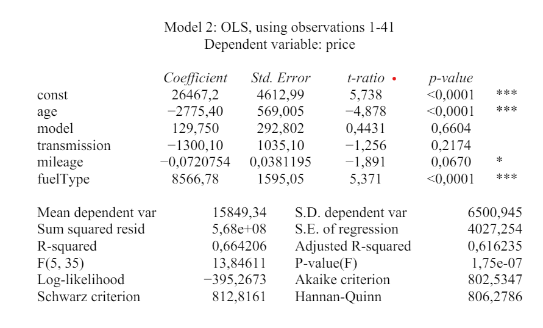
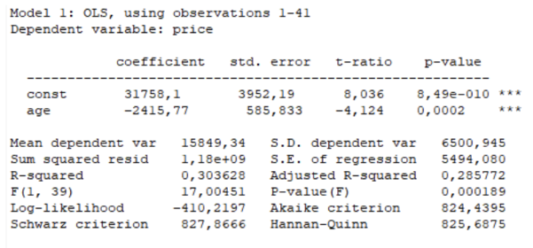

[1] "R commands read into memory"Assignment 2
Abstract
This article evaluates novel approaches to do some really important things.
Adjust the output text below and insert at a appropriate place in the document below
Would like to refer to (Wickham, Çetinkaya-Rundel, and Grolemund 2023) and (Karlsen Kivedal 2023)
Model 1: One variable and linear \[price_i=\beta_0+\beta_1 mileage_i + u_i\]
Model 2: Two variables and non-linear \[price_i=\beta_0+\beta_1 mileage_i+ \beta_2 mileage_i^2 + u_i\]
Data
summary statistics
descsum model price transmission mileage
Min. : 1.000 Min. : 6038 Min. :1 Min. : 50
1st Qu.: 2.000 1st Qu.:10950 1st Qu.:2 1st Qu.: 6345
Median : 4.000 Median :15499 Median :2 Median : 15096
Mean : 4.317 Mean :15849 Mean :2 Mean : 21975
3rd Qu.: 5.000 3rd Qu.:17998 3rd Qu.:2 3rd Qu.: 31558
Max. :11.000 Max. :39923 Max. :3 Max. :130400
fuelType age
Min. :1.000 Min. :4.000
1st Qu.:1.000 1st Qu.:5.000
Median :1.000 Median :7.000
Mean :1.317 Mean :6.585
3rd Qu.:2.000 3rd Qu.:8.000
Max. :2.000 Max. :9.000 correlation matrix
kable(desccor)| model | price | transmission | mileage | fuelType | age | |
|---|---|---|---|---|---|---|
| model | 1.0000000 | 0.2541991 | -0.1549412 | -0.0641297 | 0.2282952 | -0.0485343 |
| price | 0.2541991 | 1.0000000 | -0.1367121 | -0.3818590 | 0.3048657 | -0.5510241 |
| transmission | -0.1549412 | -0.1367121 | 1.0000000 | -0.0655195 | -0.1678075 | -0.1332874 |
| mileage | -0.0641297 | -0.3818590 | -0.0655195 | 1.0000000 | 0.4411576 | 0.6423262 |
| fuelType | 0.2282952 | 0.3048657 | -0.1678075 | 0.4411576 | 1.0000000 | 0.3718314 |
| age | -0.0485343 | -0.5510241 | -0.1332874 | 0.6423262 | 0.3718314 | 1.0000000 |
Results
Estimations
tidres1# A tibble: 2 × 5
term estimate std.error statistic p.value
<chr> <dbl> <dbl> <dbl> <dbl>
1 (Intercept) 18226. 1323. 13.8 1.46e-16
2 mileage -0.108 0.0419 -2.58 1.38e- 2glares1# A tibble: 1 × 12
r.squared adj.r.squared sigma statistic p.value df logLik AIC BIC
<dbl> <dbl> <dbl> <dbl> <dbl> <dbl> <dbl> <dbl> <dbl>
1 0.146 0.124 6085. 6.66 0.0138 1 -414. 835. 840.
# ℹ 3 more variables: deviance <dbl>, df.residual <int>, nobs <int>Predictions
pred_1 1 2 3 4
18220.743 16593.372 15849.341 4122.125 - The first predicted value equal to 18220.743
- The second predicted value equal to 16593.372
Inroduction
We are going to take a look at a data analysis assignment.we are going to look at different factors and see how they affect the price of a car.
According to (Knuth 1984)
Data
Results
Estimations
Chapter A
We can separate them as b2 for age, b3 for model, b4 for transmission, b5 for mileage and b6 for fuel type. If we are describing b3 we can say that if b3 increases with one then b1(price) increases with 129,750 if everything else stays the same. We can describe the rest of the coefficient using the same method.
Chapter B
- Comapred to the model in task B we can se that the age of the car has more effect on the price this is probably caused by the fact that now we have many more variables that effect the scale of how each variable effects the price.¨
Chapter C
- The final model is more accurate because it contains multiple different values that effect the price of the car instead of just using age. Because as we know the price of the car is not just chosen by the age but many different factors and that’s why i think this is a better model.
Predictions
Conclusions
We see that the final model is better suited for calculating the estimated price of the car. because it includes multiple different factors.
Number of words in the assignment is: 410
Appendix

Figure 1 shows GRETL output …

Figure 1 shows GRETL output …
References
Karlsen Kivedal, Bjornar. 2023. “Anvendt Statistikk Og Okonometri” 1 (212): 1–304. https://www.universitetsforlaget.no/avendt-statistikk-og-okonometri.
Knuth, Donald E. 1984. “Literate Programming.” Comput. J. 27 (2): 97–111. https://doi.org/10.1093/comjnl/27.2.97.
Wickham, Hadley, Mine Çetinkaya-Rundel, and Garrett Grolemund. 2023. R for Data Science. " O’Reilly Media, Inc.".